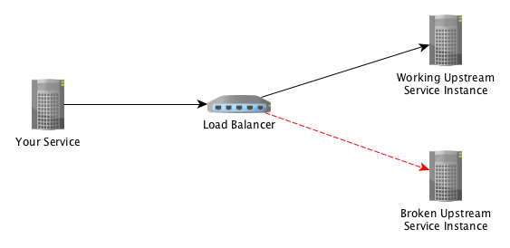
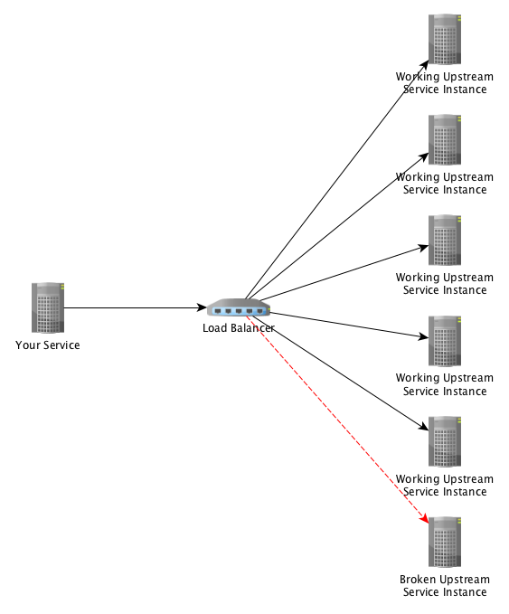

Engineering
Engineering
Designing Resilient Systems: Circuit Breakers or Retries? (Part 1)

This post is the first of a two-part series on Circuit Breakers and Retries, where we will introduce and compare these two often used service reliability concepts. For Part 1, we will focus on the use cases for implementing circuit breakers including the different options related to the configuration of circuits.
Things should just work. That is the most fundamental expectation that any consumer has towards a service provider. But just as poor weather is inevitable and often unpredictable, so are software and hardware failures. That is why it’s important for software engineers to plan and account for failures.
In this first article of a two-part series, we will begin to introduce and compare two frequently used service reliability mechanisms: Circuit Breakers and Retries. At Grab, we use both of these mechanisms extensively throughout our many software systems to ensure that we can weather failures and continue to provide our consumers with the services they expect from us. But are both mechanisms equal? Where and how do we choose one over the other?
In this series we will take a close look at both approaches and their use cases, to help you make an informed decision regarding if and when to apply each method. But let’s start by looking at the common reasons for failures. With our services communicating with numerous external resources, failures can be caused by:
- Networking issues
- System overload
- Resource starvation (e.g. out of memory)
- Bad deployment/configuration
- Bad request (e.g. lack of authentication credentials, missing request data)
But rather than thinking of all the ways a call to an upstream service could fail, it is often easier to consider what a successful request is. It should be timely, in the expected format, and contain the expected data. If we go by this definition, then everything else is therefore some kind of failure, whether it’s:
- a slow response
- no response at all
- a response in the wrong format
- a response that does not contain the expected data
In planning for failures, we should strive to be able to handle each of these errors, just as we should try to prevent our service from emitting them. So let’s start looking at the different techniques for addressing these errors.
(Note: All the examples and tools mentioned in this article are in Go. However, prior knowledge of Go is not required, only advantageous.)
Introducing the Circuit Breaker
Has your electricity ever shorted out? Perhaps you switched on a faulty appliance, plunging your entire house into darkness. Darkness may be inconvenient, but it’s certainly better than things catching fire or getting electrocuted!
The device in your electrical box that is protecting you is called a circuit breaker. Instead of letting the electricity through the faulty appliance and potentially causing more problems, it has detected a fault and broken the connection.
Software circuit breakers work the same way. A software circuit breaker is a mechanism that sits between 2 pieces of code and monitors the health of everything flowing through it. However, instead of stopping electricity when there’s a fault, it blocks requests.
A typical “happy path” request from a service to an upstream service looks like this:
Our "main" calls the circuit breaker (also inside our code), which in turn makes the request to the upstream service. The upstream service then processes the request and sends a response. The circuit breaker receives the response, and if there was no error, returns it to the original caller.
So, let’s look at what happens when the upstream service fails.
The request path is the same. And at this point, you might be wondering what we have gained from this as our request still failed. You are right, for this specific request, we gained nothing. However, let’s assume that all of the requests for the past 3 seconds have failed. The circuit breaker has been monitoring these requests and keeping track of how many passed and how many failed. It notices that all the requests are failing, so instead of making any further requests, it opens the circuit, which prevents any more requests from being made. Our flow now looks like this:
It might look like we still haven’t achieved anything. But we have.
Consider our previous discussion on how services can break: Services can break when they are overwhelmed with requests. Once a service is overloaded, making any further requests could result in two issues. Firstly, making the request is likely pointless, as we are not going to get a valid and/or timely response. Secondly, by creating more requests, we are not allowing the upstream service to recover from being overwhelmed and in fact, most likely overloading it more.
But circuit breakers are not just about being a good user and protecting our upstream services. They are also beneficial for our service as we will see in the next sections.
Fallback
Circuit breakers, like Hystrix, include the ability to define a fallback. The flow with a fallback in place looks like this:
So what does that get us? Let’s consider an example. Assume you are writing a service that requires the road travel distance between 2 locations.
If things are working as they should, we would call the “distance calculator service”, providing it with the start and end locations, and it will return the distance. However, that service is down at the moment. A reasonable fallback in this situation might therefore be to estimate the distance by using some trigonometry. Of course, calculating distance in this manner would be inaccurate, but using an inaccurate value which allows us to continue processing the user’s request is far better than to fail the request completely.
In fallback processing, using an estimated value instead of the real value not the only option, other common options include:
- Retrying the request using a different upstream service
- Scheduling the request for some later time
- Loading potentially out of date data from a cache
There are, of course, cases where there is no reasonable fallback. But even in these situations, using a circuit breaker is still beneficial.
Consider the cost of making and waiting for a request that eventually fails. There are CPU, memory and network resources, all being used to make the request and wait for the response. Then there is the delayed response to your user.
All of these costs are avoided when the circuit is open, as the request is not made but instead immediately failed. While returning an error to our users is not ideal, returning the fastest possible error is the best worst option.
Should the Circuit Breaker Track All Errors?
The short answer is no. We should only track errors that are not caused by the user (i.e. HTTP error codes 400 and 401), but by the network or infrastructure (i.e. HTTP error codes 503 and 500).
If we tracked errors caused by users, then it would be possible for one malicious user to send a large number of bad requests, causing our circuit to open and creating a service disruption for everyone.
Circuit Recovery
We have talked about how the circuit breaker can open the circuit and cut requests when there have been too many errors. We should also be aware of how the circuit becomes closed again.
Unlike the electricity example we used above, with a software circuit breaker, you don’t need to find the fuse box in the dark and close the circuit manually. The software circuit breaker can close the circuit by itself.
After the circuit breaker opens the circuit, it will wait for a configurable period, called a Sleep Window, after which it will test the circuit by allowing some requests through. If the service has recovered, it will close the circuit and resume normal operations. If the requests still return an error, then it will repeat the sleep/try process until recovery.
Bulwark
At Grab, we use the Hystrix-Go circuit breaker, and this implementation includes a bulwark. A bulwark is a software process that monitors the number of concurrent requests and is able to prevent more than the configured maximum number of concurrent requests from being made. This is a very cheap form of rate-limiting.
In our case, the prevention of too many requests is achieved by opening the circuit (as we saw above). This process does not count towards the errors and will not directly influence other circuit calculations.
So why is this important? As we talked about earlier, it’s possible for services to become unresponsive (or even crash) when it receives too many concurrent requests.
Consider the following scenario: A hacker has decided to attack your service with a DOS attack. All of a sudden your service is receiving 100x the usual amount of requests. Your service could then make 100x the amount of requests to your upstream.
If your upstream does not implement some form of rate-limiting, with this many requests, it would crash. By introducing a bulwark between your service and the upstream, you achieve two things:
- You do not crash the upstream service because you limit the amount of requests that it cannot process.
- The “extra” requests that are failed by the bulwark have both the ability to fallback and the ability to fail fast.
Circuit Breaker Settings
The Hystrix-Go circuit breaker has five settings, they are:
Timeout
This duration is the maximum amount of time a request is allowed to take before being considered an error. This takes into consideration that not all calls to upstream resources will fail promptly.
With this, we can limit the total amount of time it takes us to process a request by defining how long we are willing to wait for our upstream.
Max Concurrent Requests
This is the bulwark setting (as mentioned above).
Consider that the default value (10) indicates simultaneous requests and not “per second”. Therefore, if requests are typically fast (completed in a few milliseconds) then there is no need to allow more.
Additionally, setting this value too high can cause your service to become starved of the resources (memory, CPU, ports) that it needs to make the requests.
Request Volume Threshold
This is the minimum number of requests that must be made within the evaluation (rolling window) period before the circuit can be opened.
This setting is used to ensure that a small number of errors during low request volume does not open the circuit.
Sleep Window
This is the duration the circuit waits before the circuit breaker will attempt to check the health of the requests (as mentioned above).
Setting this too low limits the effectiveness of the circuit breaker, as it opens/checks often. However, setting this duration too high limits the time to recovery.
Error Percent Threshold
This is the percentage of requests that must fail before the circuit is opened.
Many factors should be considered when setting this value, including:
- Number of hosts in the upstream service (more info in the next section)
- Reliability of the upstream service and your connection to it
- Service’s sensitivity to errors
- Personal preference
Circuit Configuration
In the next few sections, we will be discussing some different options related to the configuration of circuits, in particular, the per host and per service configuration, and how do we as programmers define the circuit.
In Hystrix-Go, the typical usage pattern looks like this:
hystrix.Go("my_command", func() error {
// talk to other services
return nil
}, func(err error) error {
// do this when services are down
return nil
})
The very first parameter “my_command” is the circuit name. The first thing to notice here is that because the circuit name is a parameter, the same value can be supplied to multiple invocations of the circuit breaker.
This has some interesting side effects.
Let’s say your service calls multiple endpoints of an upstream service called ‘list’, ‘create’, ‘edit’ and ‘delete’. If we want to track the error rates of each of these endpoints separately, you can define the circuit like this:
func List() {
hystrix.Go("my_upstream_list", func() error {
// call list endpoint
return nil
}, nil)
}
func Create() {
hystrix.Go("my_upstream_create", func() error {
// call create endpoint
return nil
}, nil)
}
func Update() {
hystrix.Go("my_upstream_update", func() error {
// call update endpoint
return nil
}, nil)
}
func Delete() {
hystrix.Go("my_upstream_delete", func() error {
// call delete endpoint
return nil
}, nil)
}
You will notice that I have prefixed all of the circuits with “my_upstream_” and then appended the name of the endpoint. This gives me 4 circuits for 4 endpoints.
On the other hand, if we want to track all the errors relating to one destination together, we can define our circuits like this:
func List() {
hystrix.Go("my_upstream", func() error {
// call list endpoint
return nil
}, nil)
}
func Create() {
hystrix.Go("my_upstream", func() error {
// call create endpoint
return nil
}, nil)
}
func Update() {
hystrix.Go("my_upstream", func() error {
// call update endpoint
return nil
}, nil)
}
func Delete() {
hystrix.Go("my_upstream", func() error {
// call delete endpoint
return nil
}, nil)
}
In the above example, all of the different calls use the same circuit name.
So how do we decide which to go with? In an ideal world, one circuit per upstream destination is sufficient. This is because all failures are infrastructure (i.e. network) related and in these cases when calls to one endpoint fail, all are certain to fail. This approach would result in the circuit being opened in the quickest possible time, thereby reducing our error rates.
However, this approach assumes that our upstream service cannot fail in such a way that one endpoint is broken and the others remain working. It also assumes that our processing of the upstream responses never make a mistake processing the errors returned from the upstream service. For example, if we were to accidentally track user errors on one of our circuit breaker calls, we could quickly find ourselves prevented from making any calls to our upstream.
Therefore, even though having one circuit per endpoint results in circuits that are slightly slower to open, it is my recommended approach. It is better to make as many successful requests as possible than inappropriately open the circuit.
One Circuit Per Service
We have talked about upstream services as if they are a single destination, and when dealing with databases or caches, they might be. But when dealing with APIs/services, this will seldom be the case.
But why does this matter? Think back to our earlier discussions regarding how a service can fail. If the machine running our upstream service has a resource issue (out of memory, out of CPU, or disk full), these are issues that are localised to that particular machine. So, if one machine is resource-starved, this does not mean that all of the other machines supporting that service will have the same issue.
When we have one circuit breaker for all calls to a particular resource or service, we are using the circuit breaker in a “per service” model. Let’s look at some examples to examine how this affects the circuit breaker’s behaviour.
Firstly, when we only have 1 destination, as is typically the case for databases:

If all calls to the single destination (e.g. database) fail, then our error rate will be 100%.
The circuit is sure to open, and this is desirable as the database is unable to respond appropriately and further requests will waste resources.
Now let’s look at what happens when we add a load balancer and more hosts:

Assuming a simple round-robin load balancing, all calls to one host succeed and all calls to the other fail. Giving us: 1 bad host / 2 total hosts = 50% error rate.
If we were to set our Error Percent Threshold to anything over 50%, then the circuit would not open, and we would see 50% of our requests fail. Alternatively, if we were to set our Error Percent Threshold to less than 50%, the circuit would open and all requests shortcut to fallback processing or fail.
Now, if we were to add additional hosts to the upstream service, like this:

Then the calculation and the impact of one bad instance change dramatically. Our results become: 1 bad hosts / 6 total hosts = 16.66% error rate.
There are a few things we can derive from this expanded example:
- One bad instance will not cause the circuit to open (which would prevent all requests from working)
- Setting a very low error rate (e.g. 10%), which would cause the circuit to open because of our one bad host would be foolish as we have 5 other hosts that are able to service the requests
- Circuit breakers in a “per service” configuration should only have an open circuit when most (or all) of the destination hosts are unhealthy
One Circuit Per Host
As we have seen above, it is possible for one bad host to impact your circuit, so you might then consider having one circuit for each upstream destination host.
However, to achieve this, our service has to be aware of the number and identity of upstream hosts. In the previous example, it was only aware of the existence of the load balancer. Therefore, if we remove the load balancer from our previous example, we are left with this:
With this configuration, our one bad host cannot influence the circuits that are tracking the other hosts. Feels like a win.
However, with the load balancer removed, our service will now need to take on its responsibilities and perform client-side load balancing.
To be able to perform client-side load balancing, our service must track the existence and health of all the hosts in our upstream service and balance the requests across the hosts. At Grab, many of our gRPC-based services are configured in this way.
With our new configuration, we have incurred some additional complexity, relating to client-side load balancing, and we have also gone from 1 circuit to 6. These additional 5 circuits also incur some amount of resource (i.e. memory) cost. In this example, it might not seem like a lot, but as we adopt additional upstream services and the numbers of these upstream hosts grow, the cost does multiply.
The last thing we should consider is how this configuration will influence our ability to fulfil requests. When the host first goes bad, our request error rate will be the same as before: 1 bad host / 6 total hosts = 16.66% error rate
However, after sufficient errors have occurred to open the circuit to our bad host, then we will be able to avoid making requests to that host, and we would resume having a 0% error rate.
Final Thoughts on Per Service vs Per Host
Based on the discussion above, you may want to rush off and convert all of your circuits to per host. However, the additional complexity of doing so should not be underestimated.
Additionally, we should also consider what response our per service load balancer might have when the bad host is failing. If the load balancer in our per service example is configured to monitor the health of service running on each host (and not just the health of the host itself), then it is able to detect and remove that host from the load balancer and potentially replace it with a new host.
It is possible to use both per service and per host at the same time (although I have never tried). In this configuration, the per service circuit should only open when there is little chance there are any valid hosts and by doing so it would save the request processing time taken to run through the retry cycle. The configuration for this has to be: Circuit Breaker (per service) → Retry → Circuit Breaker (per host).
My advice is to consider how and why your upstream service could fail and then use the simplest possible configuration for your situation.
Up Next, Retries…
So we’ve taken a look at the first common mechanism used in designing for reliability, which is Circuit Breakers. I hope you have enjoyed this post and found it useful. Comments, corrections, and even considered disagreements are always welcome.
In our next post, we will look at the other service reliability mechanism on the spotlight, which is Retries. We will see how it works, how to configure it, and tackle some implementations with backoff and jitter. We will also discuss when we should use circuit breakers versus retries, or even a combination of both.
Stay tuned!